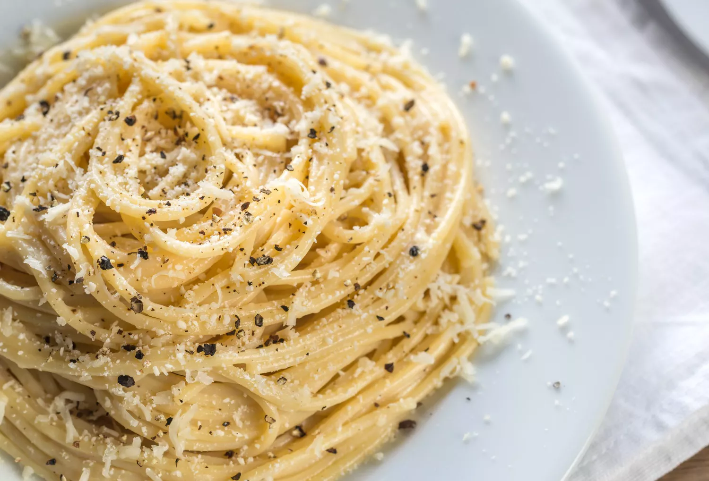

Cacio e Pepe

Ingredients
- 8 ounces dried pasta
- 1 ounce Parmesan cheese (plus more for serving), grated
- 1 ounce Pecorino-Romano cheese, grated
- Freshly cracked black pepper, to taste
Steps
- Boil pasta in a pot of heavily salted water for about 2 minutes less than the package directions recommend.
- Preheat a large skillet over medium-low heat.
- In a small mixing bowl, add both cheeses, a generous amount of black pepper, and a splash of cold water; mix vigorously to form a paste.
- Drain pasta, reserving about 2 cups of pasta water.
- Add about 1 cup of pasta water to the skillet; add in the drained pasta and toss. Dollop the cheese paste around in the pan. Mix vigorously to create a smooth sauce, adding in more pasta water as needed to achieve desired consistency.
- Taste, adjust seasoning as desired, and serve topped with more Parmesan and more black pepper.